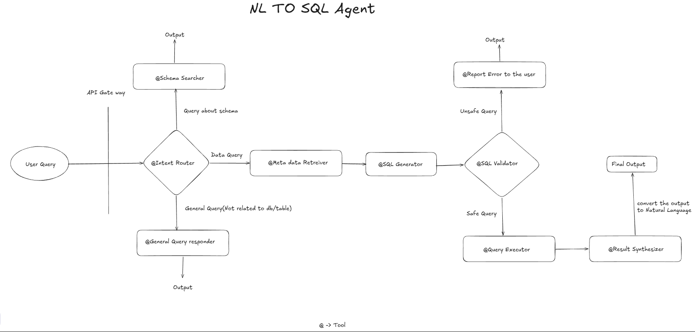

Design(High and Low Level) and Architecture of text to SQL Agent
This blog is to understand high and low level design of natual languagae to Sql Query Execution and get the output in human understable format.
Why Not Single LLM Call?
Lack of context
LLM(Large Language Model) doesn’t understand business log - what is what?. And it will fail in production. And the accuracy is also around 50 - 60%.
Hallucination
LLM confidently generated imaginary tables, column names and flawed joins.
Performance Disaster
Query that perform a entire table scan on billion rows that criple the entire warehouse. Some database charge based on the query runtime.
Security
Direct execution of llm generated sql is an open invitation for sql ingesion attack or an unitentional data exposure.
How can I go with production grade?
Pipeline with safeguard, context aware and validation at every step. Ignoring the validation leads to inefficient query the worst case - massive security vulnerablities
- Handle complex queries(Enterprise scheme)
- self correction queries
- safe and executable ones
- Enforcing Security permission
- providing explainable result
High Level Design
Modularity and Specilization
One LLM Doesn’t do everything
Agentic Workflow
- statefull graph
- conditional rerouting
- retry loops
Safety First
Read Replicas and Read Only DB Acess - SQL Guard - > High Risk queries human in the loop
Observablity/Monitoring
Every Step is traced (Logging / Eval/ LLM as Judge)
Optimizer
We optimize the performace like feedback loop, negative signaling with ground truth creates a golden data set out of it.
Scalablity
Async, caching, serverless, loadbalacing, etc

We put all the actionable item as a tool - Task giver.
Intent classifier as a tool
- Based on the user query like hi/hello/thank you/chit chat, etc. Generic query goes to
generic query responder tool - How many schema are present goes to
schema searcher tooland - Data query as last week sales are go the
Meta data retreiver tool
Meta data Retreiver as tool
We create a embedding for the names and more importantly detailed description of every table column in one vector database. When the user ask the question we create the embedding of that question and perform the vector search to find the top k similiar table and column description. Only this small relevant schema is passed to the SQL Generation prompt this improves the accuracy.
SQL Generator and validator
After SQL Generator passed to SQl validator very important for the production. Before executor must pass through the validator Check the generatod SQL against list of dangerous keyword(Drop, delete, update, etc,) and also make sure it not acesss unauthorized table.
Use explain command to analze the query plan if the plan involves full table scan or massive table or has an estimated high cost, put that in the human in the loop or reject it.
Expert insight
Feedback loop how you perfect it
Benovalant Dictator: Every time user indicates negative signal pass it to data analyst/ SQL query Admin correctly it manaually and trace it . this this golden data for future training & optimization of the current system.
Low Level Design
Query Classification and metadata retreival
- Classified query + intent classification via structured pydantic output(few shot + business glosarry).
- Scheme Retreivel: Embed scheme as document(tablename + column + sample rows + description of schema)
- Hybrid Search(keyword + BM25, cosine similiarity), graph for joins
- top k tables and column to avoid bloat
- cache embedding
SQL Generation and validation
- Validator + guard (SQL GLot) - > check for dangerous operation delete, update, etc
- LLM As Judge or rule based limits, PII Filters
- Dry run with sample data
Execution
- Parametrized execution(No string concatination)
- timeouts, row limit, read only connection
- return result along with metadata
Corrector
- Self refinement Loop -if error or empty loop
- feed error + original sql back to generator
- Conditional edge max 3-4 retries
- Exponential back off
Orchestration and frame work
- Langchain/Langgraph/ Pydatic AI/ Smolagent/Crew ai
- For statefull graph / Human in the loop
- Langchain/ Langgraph/ crew AI/ SQL ALchemy/ Vector Store - Milvus, pipnecone/chroma db, etc
- API / FastAPI (Read only replicas)
Explain and answer
- Natural language summay + visualization(Next level)
Prompt Engineering best practice
- System prompt with role and constrains + dailects
- few shot prompt with chain of thoughts
- structured output(pydantic output parser)
- self critique refinement) - Memory - short time session
- prompt includes rewritten query + relevent schemas + few shot example + plan + dialect + specific rules with Structured output
Mixed LLM
Use LLM based on the task- for example intent classification often require smaller model such as GPT 4o-mini, haiku, etc for complex task such as higher model LLAMA 4, GPT 5, Qwen 3.5, Grok 4, Claude Opus 4.5 + ,etc
Evaluation
- Using Spider and Bird as the benchmark for text to Sql Validation.
- Validating against different model.
- Negative signals are capture with MLflow / Langsmith, etc used for golden dataset
Deployment
Docker and kubernetes